Cinco de Mayo Burrito
This weekend was Cinco de Mayo. On that day in 1862, a small Mexican Army defeated a large French Army. Another way of looking at it is that it's the celebration of an underdog overcoming an unsurmountable titan. You have to be abnormal. Do the unexpected. Think outside of the known. In order to overcome what is thought to be impossible. This recipe very much represents that, in my mind I was going to create an average burrito until I added the hash brown. #goldenhashbrowns
Ingredients
- Shredded chicken
- Corn
- Spinach
- Mushroom
- 1/2 Avocado
- Whole wheat burrito wrap
- Cucmumber
- Hash Brown
- Vegetable Oil
- Seasoning (Salt, Pepper)
Prep & Directions
- Boil the corn till tender
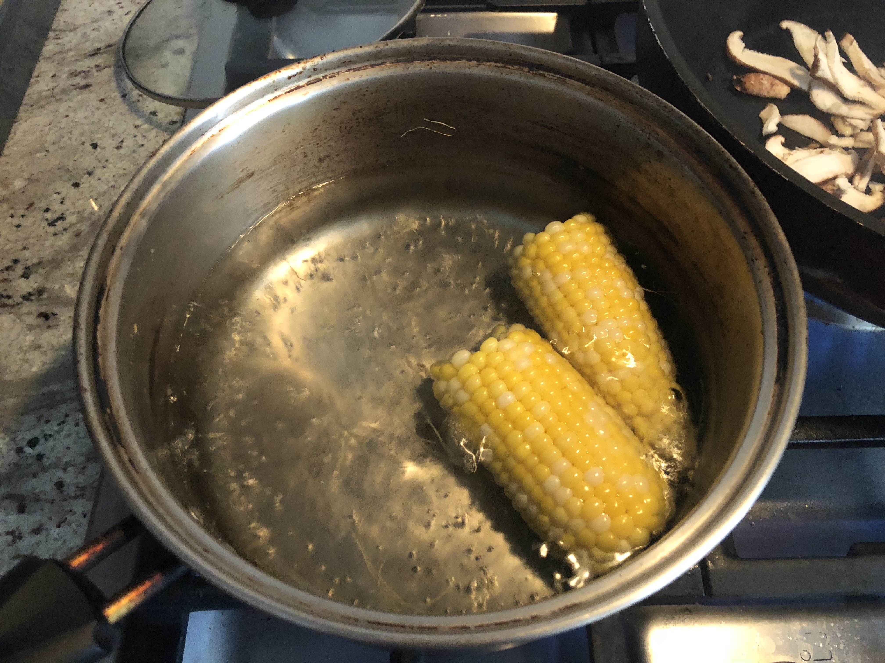 - Shred some chicken from stop and shop
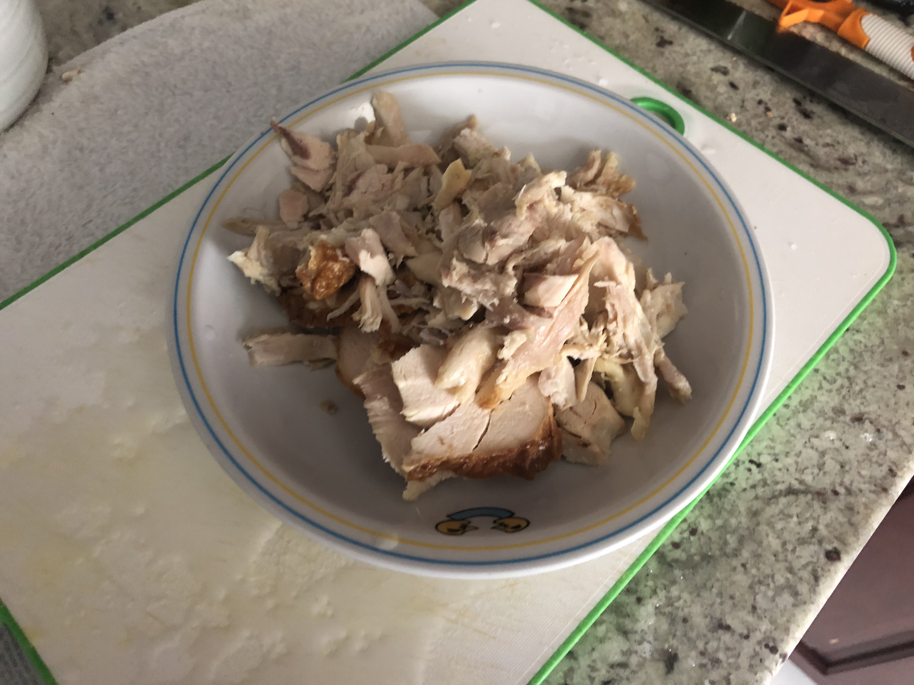 - Slice up the mushrooms
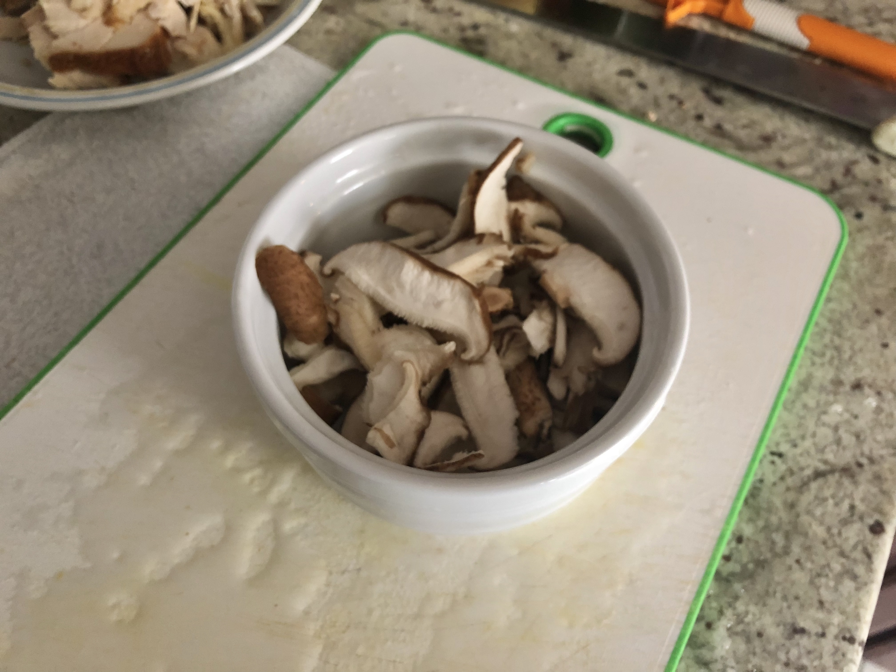 - Add a bit of vegetable oil and stir fry the mushrooms
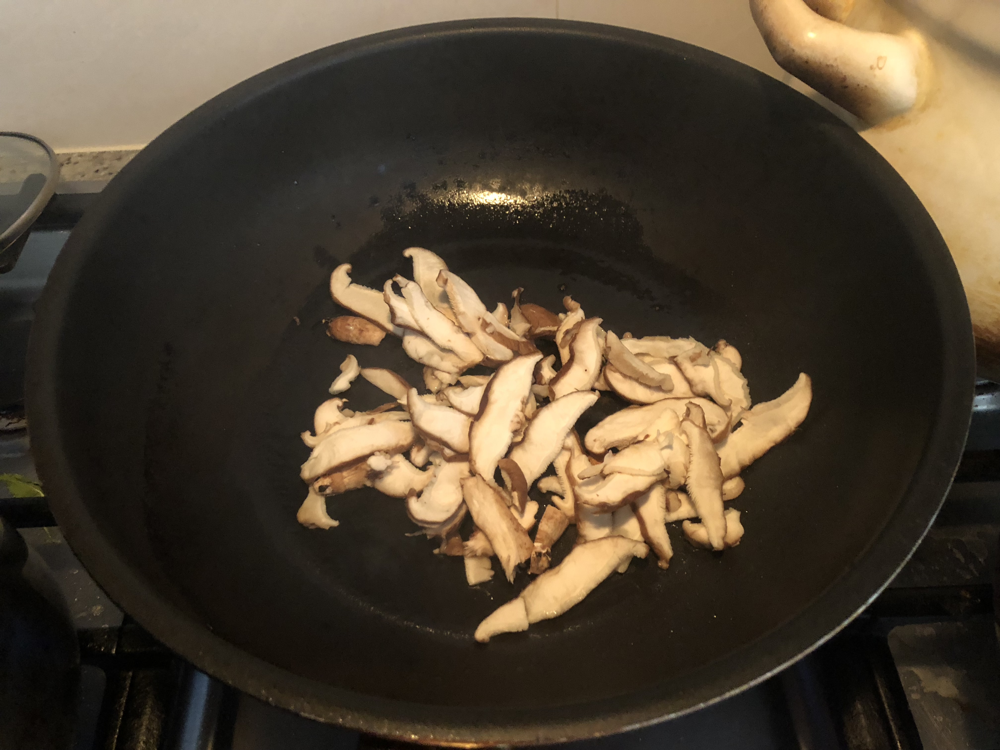 - Add in the spinach
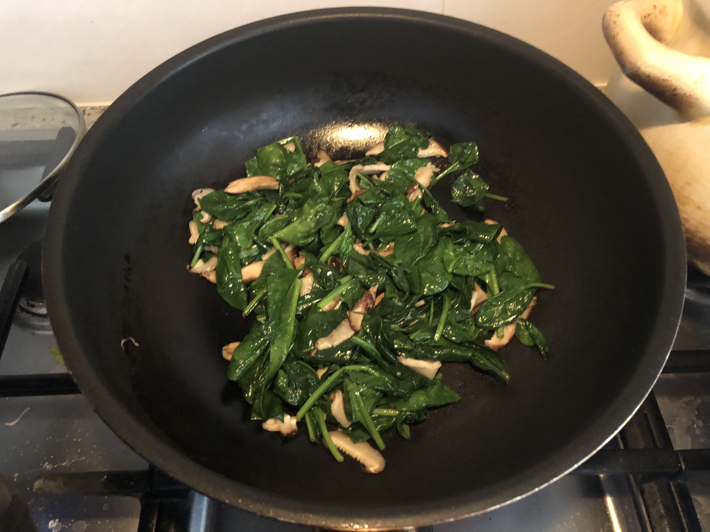 - Add in the chicken
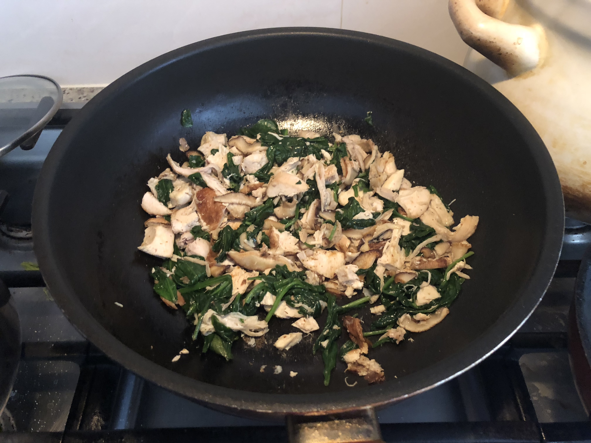 - Ask your sister to slice an avocado
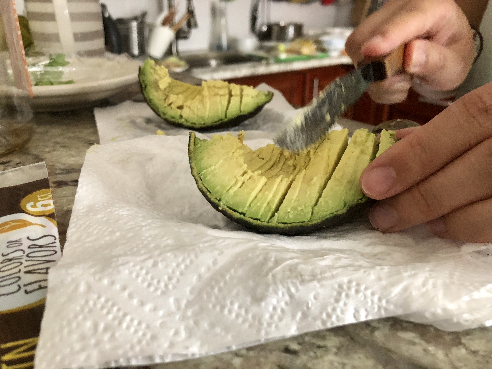 - Ask your sister to slice the hot corn. Look at her technique!
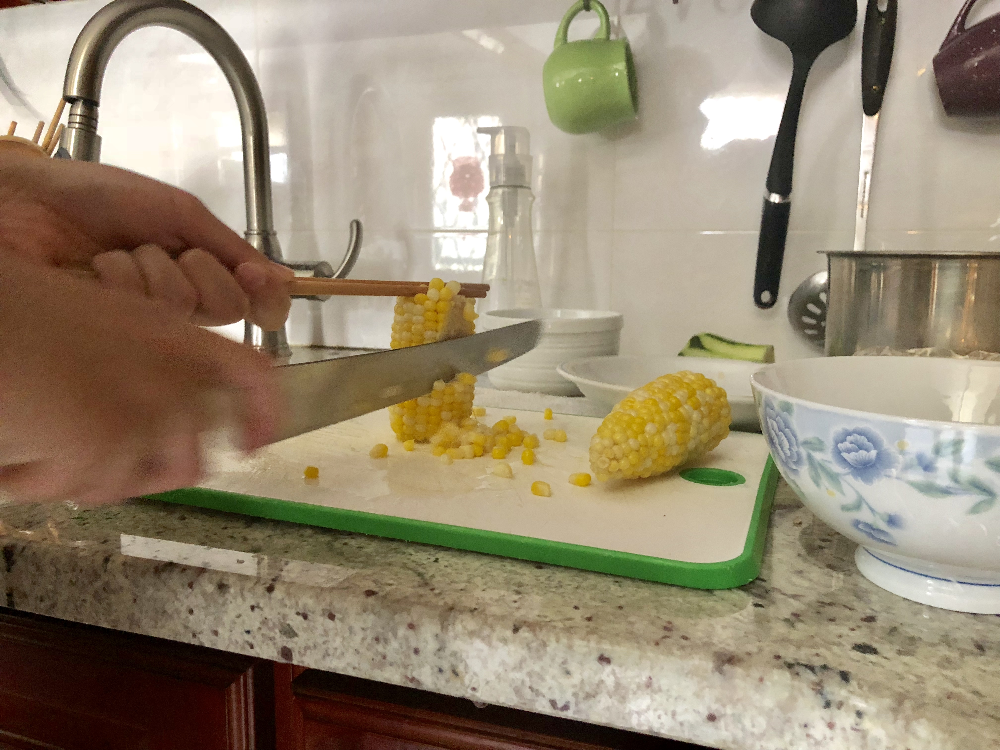 - Pan fry a hash brown just because you're craving it
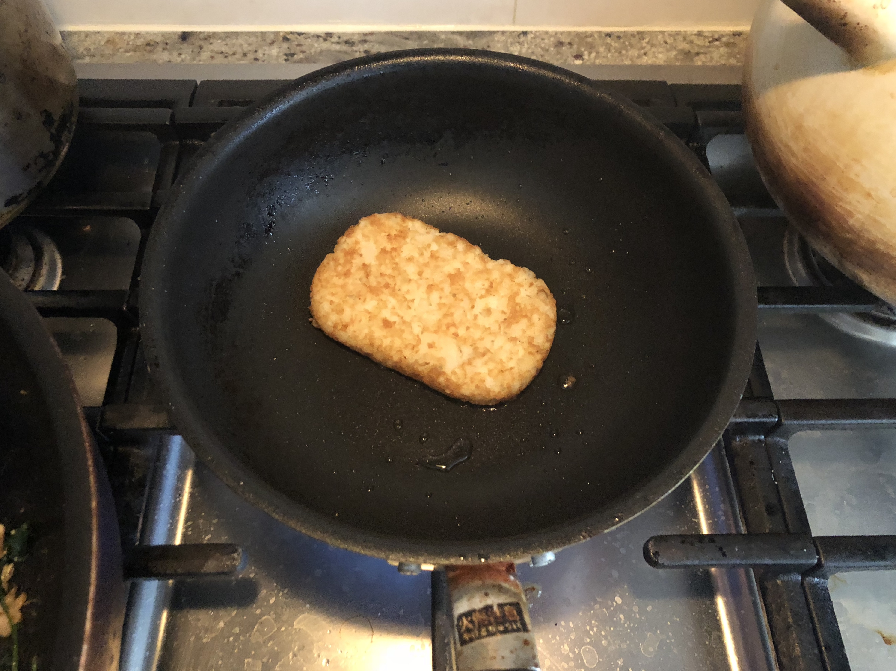 - Warm up the wrap.
- Plate it!
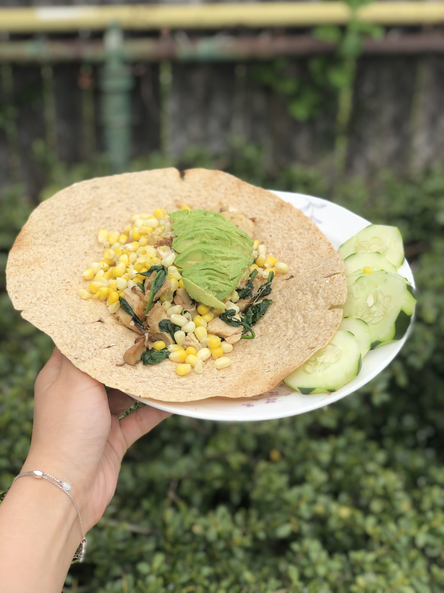
Bon Appetit
Marley has to eat when you eat.
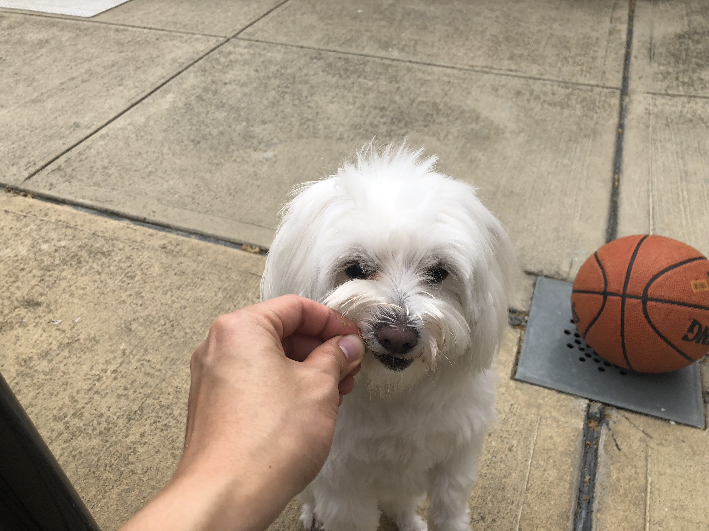